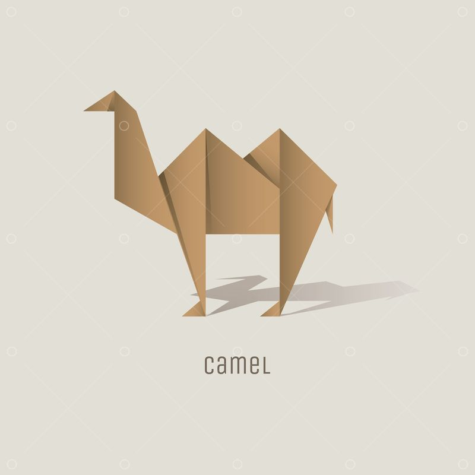
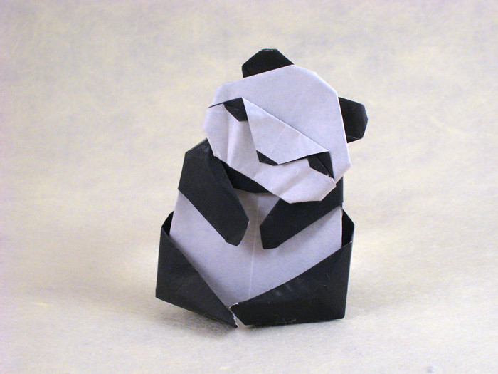
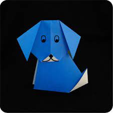
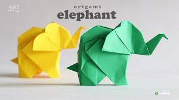

Origami Diagrams

Camel
- Camels have three sets of eyelids and two rows of eyelashes to keep sand out of their eyes.
- Camels have thick lips which let them forage for thorny plants other animals can't eat.
- Camels can completely shut their nostrils during sandstorms.

Panda
- Pandas have 6 toes to grasp bamboo..
- An adult panda can eat 12–38 kilos of bamboo per day!
- Prehistoric pandas lived up to 2 million years ago.

Chameleon
- UNLIKE MANY LIZARDS, CHAMELEONS CAN'T REGROW THEIR TAILS.
- THEIR FEET WORK LIKE SALAD TONGS.
- THEY MAINLY CHANGE COLOR IN ORDER TO COMMUNICATE OR REGULATE BODY TEMPERATURE.

Pigeon
- Pigeons are incredibly complex and intelligent animals.
- Pigeons are renowned for their outstanding navigational abilities.
- Pigeons mate for life, and tend to raise two chicks at the same time.

Teddy Bear
- Teddy bears got their name from the story that Teddy Roosevelt refused to shoot a bear cub while on a hunting trip in 1902.
- The world's smallest stitched teddy bear is a mere 0.29 inches tall! It was created by South African artist Cheryl Moss who is known for her minuscule work.
- The world's largest stitched teddy bear is American! The 55-foot-4 creation was made in 2008 and is named C.T.Dreams, which stands for Connect the Dreams. You can go visit it in Wichita, Kansas!

Dog
- Dogs can sniff at the same time as breathing.
- Some have such good noses they can sniff out medical problems.
- Some are fast and could even beat a cheetah!

Rabbit
- To express happiness, bunnies will sometimes jump around and flick their heads and feet.
- Their amazing ears can also be rotated almost a full circle to 270 degrees.
- Rabbits have almost 360 degree vision but they are born with their eyes shut

Elephant
- The African elephant is the world's largest land mammal – with males on average measuring up to 3m high and weighing up to 6 tonnes.
- YOU CAN TELL THE TWO SPECIES APART BY THEIR EARS
- Elephants have around 150,000 muscle units in their trunk.